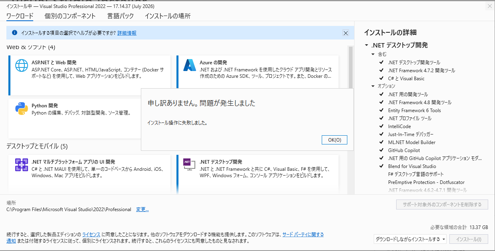

こんにちは、Japan Developer Support Core チームの松井です。 今回は、Microsoft Business Center や Microsoft 365 管理センターからダウンロードした Visual Studio のブートストラッパーを実行した際に、Visual Studio Installer によるインストールの実行に失敗する事例と、その回避方法についてご紹介します。
概要
Microsoft Business Center や Microsoft 365 管理センターからダウンロードした Visual Studio のブートストラッパーを実行すると、Visual Studio Installer によるインストールの実行に失敗し、完了できない事例が確認されています。
本ブログ記事では、本記事執筆時点（2026 年 7 月）の情報を元に、事象と回避方法をご紹介します。将来のバージョンで動作が変更される可能性がありますので、あらかじめご留意ください。
事象
Business Center や Microsoft 365 管理センターから入手した Visual Studio のブートストラッパーを実行すると、Visual Studio Installer のコンポーネントが取得・展開された後、インストーラーが内部で必要なアセンブリの読み込みに失敗し、処理が中断される事象が確認されています。
このとき、Visual Studio Installer の画面上には「申し訳ありません。問題が発生しました」「インストール操作に失敗しました。」といった汎用的なメッセージが表示されるのみで、具体的な原因を示す情報は表示されない場合があります。

また、Visual Studio Installer のログ（%TEMP%\dd_installer_*.log）には、以下のようにアセンブリの読み込みに失敗した旨のエラーが出力されます。
1 | [3174:0026][2026-07-23T09:30:31] Error 0x80131040: Unhandled exception System.IO.FileLoadException encountered determining install operation result - ファイルまたはアセンブリ 'System.Threading.Tasks.Extensions, Version=4.2.1.0, Culture=neutral, PublicKeyToken=cc7b13ffcd2ddd51'、またはその依存関係の 1 つが読み込めませんでした。見つかったアセンブリのマニフェスト定義はアセンブリ参照に一致しません。 (HRESULT からの例外:0x80131040) |
回避方法
本事象が発生した場合には、以下の Visual Studio のバージョン別リリース履歴ページから、エディションに応じた最新のブートストラッパーを入手し、そちらを使用することで回避できることが確認されています。
Business Center や Microsoft 365 管理センターから入手したブートストラッパーと上記のブートストラッパーで、インストールされる Visual Studio の機能に差異はありません。また、同一のプロダクト キーでご利用いただけます。
なお、本事象が発生しない場合は、Business Center や Microsoft 365 管理センターから入手したブートストラッパーを使用しても問題ありません。
問題が解決しない場合や他の事象が発生する場合は、弊社サポートまでお問い合わせください。
本ブログの内容は弊社の公式見解として保証されるものではなく、開発・運用時の参考情報としてご活用いただくことを目的としています。もし公式な見解が必要な場合は、弊社ドキュメント (https://learn.microsoft.com や https://support.microsoft.com) をご参照いただくか、もしくは私共サポートまでお問い合わせください。